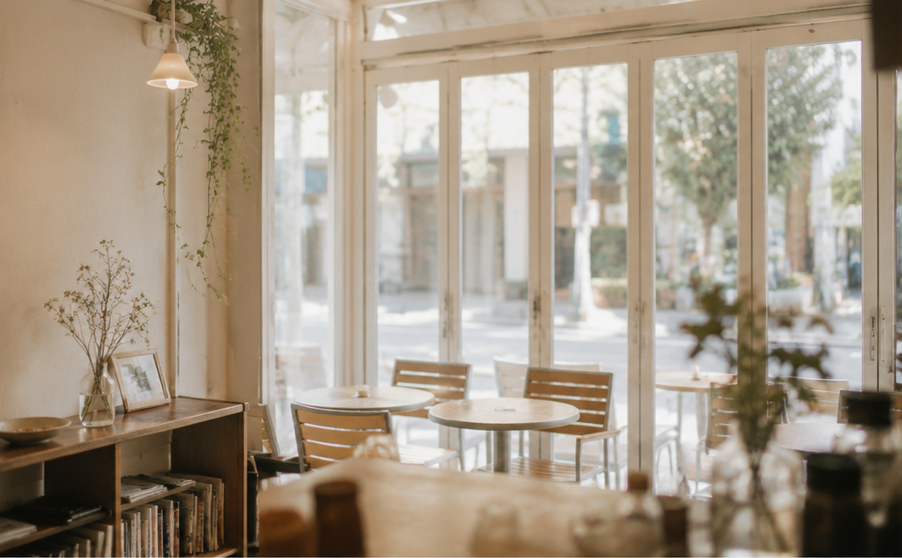
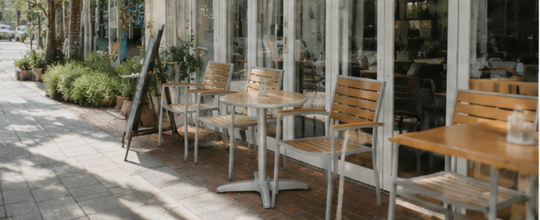
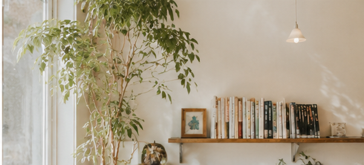
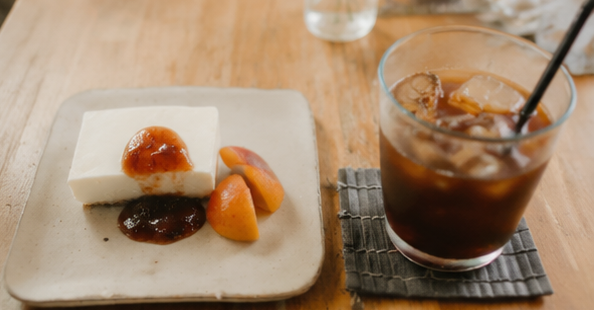
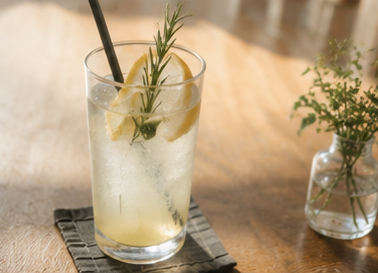

神奈川・鎌倉 由比ガ浜のカフェ
手作りシロップのかき氷と、季節の素材を活かしたごはん。
海のそばの小さなカフェで、のんびりとした時間を。

umi cafe のたのしみ
自家製のあんずをはじめ、いちごや梅など、季節ごとに変わる手作りシロップのかき氷。やわらかな氷とともに、素材の甘みと酸味をゆっくり味わえます。

由比ヶ浜から鎌倉駅へ向かう道の途中。テラス席では潮風を感じながら過ごせます。海帰りのひと休みにも立ち寄りやすい場所です。

小さな店内は、絵本や観葉植物に囲まれたアットホームな雰囲気。丁寧で気持ちのよい接客に、また立ち寄りたくなるという声が多く寄せられています。
メニュー
看板は、季節ごとに変わる手作りシロップのかき氷。食事やドリンクとあわせて、散策の合間にお楽しみください。
自家製あんず・いちご・梅など、季節ごとに変わる手作りシロップで。

ドリアやカレー、グラタン、サラダなど、鎌倉野菜をはじめ素材を活かした一皿。

抹茶ラテや自家製シロップのソーダなど。テイクアウトにも対応しています。
※ メニュー内容は季節により変わります。価格・提供状況は店舗にてご確認ください。
初めての方へ
鎌倉駅から徒歩約10分、由比ヶ浜方面への道沿いにあります。海帰りにもそのまま立ち寄れます。
ベビーカーでの来店やおむつ替え、お子さま向けのおもちゃにも対応。ご家族での散策の合間にも立ち寄りやすいカフェです。
店内でゆっくり過ごすほか、ドリンクなどのテイクアウトにも対応しています。
席数に限りがあるため、混雑時はお待ちいただく場合があります。時間に余裕をもってお越しください。
店舗の雰囲気
ガラス張りの明るい店内には、観葉植物や絵本が並びます。天気のよい日はテラス席で潮風を感じながら、お気に入りの一杯とともにゆっくりとした時間を。
店舗情報